Impeccable Live가 뭐고 어떻게 켜나요
Impeccable은 AI(Artificial Intelligence) 코딩 도구가 디자인을 더 잘하도록 돕는 스킬이에요. 발표자는 한동안 안 쓰다가 블로그 디자인을 고치면서 이런저런 방법을 다 써 봤는데, 전부 불편했다고 해요.
계기는 최근 영상에서 소개한 Be Ambitious 스킬이었어요. 목표를 10~20%가 아니라 1000% 개선처럼 크게 잡도록 이끄는 스킬이에요. 여기에 "디자인을 생산성 있게 고치고 싶다"고 하자 Claude가 Impeccable Live를 켜 줬어요. 아래 그림의 오른쪽 손그림이 그 흐름이에요. Be Ambitious에 '디자인 수정'을 말하니 'Impeccable Live' 스위치가 켜졌다는 뜻이에요.
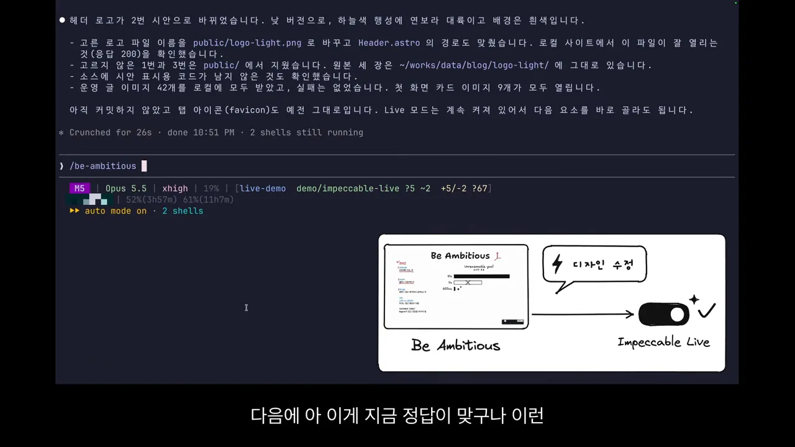
켜는 법: 명령 하나
스킬을 설치한 뒤 Claude Code에 /impeccable을 치면 뒤에 붙일 수 있는 하위 명령이 쭉 나와요. 화면에는 shape, audit, critique, animate, bolder, colorize, layout 같은 이름이 보여요. 여기서 /impeccable live를 치면 돼요.
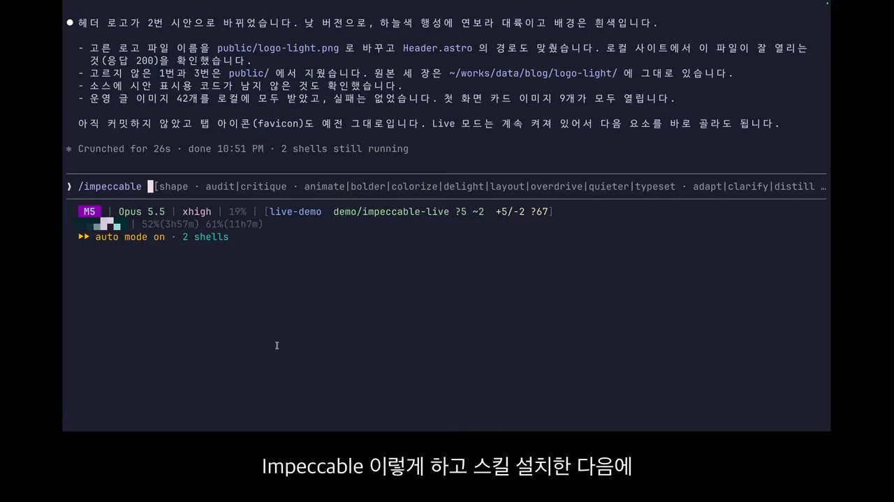
그러면 Claude Code 아래에 셸이 하나 더 떠요. 이게 Impeccable Live 서버예요. 발표자 화면의 Background 목록에는 셸 두 개가 running 상태예요. 위 줄이 .claude/skills/impeccable/scripts/impeccable live…, 아래 줄이 블로그를 띄운 npx astro dev --port 4321이에요.
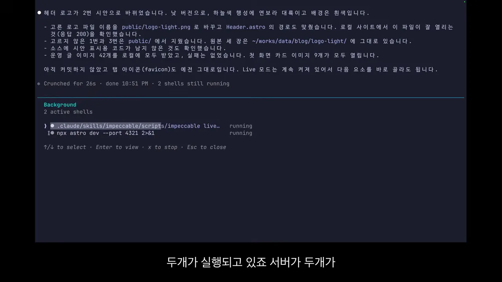
집기로 고르고 말하면 세션이 고쳐요
Live를 켜면 로컬 블로그 화면 아래쪽에 검은 바가 떠요. 원래는 영어로 나오는데 발표자는 일부러 한국어로 바꿔 놨어요. 맨 왼쪽 근처의 '집기' 버튼이 원래 Pick이에요. 이걸 누르고 고칠 요소를 클릭하면 돼요.
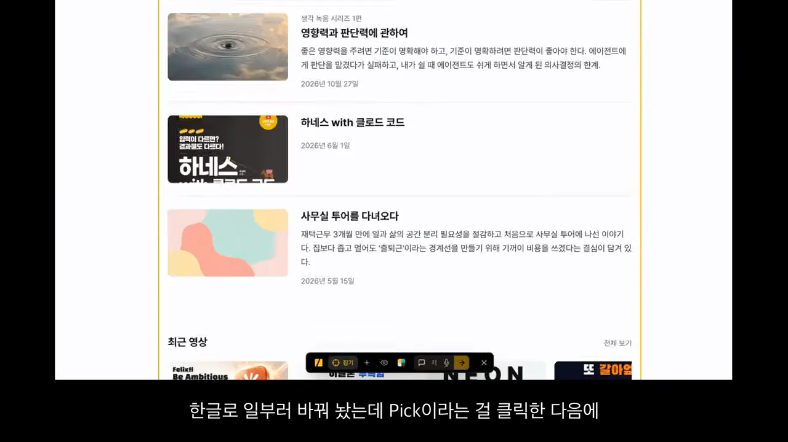
발표자는 블로그 상단에 예전에 대충 써 둔 소개 문단을 집어서 "이 설명은 지워 줘"라고 보냈어요. 바에는 '시안 3개 만드는 중'이 떠요. 그런데 터미널을 보면 이미 작업이 돌고 있어요. 발표자가 Claude Code에 직접 입력한 건 아무것도 없어요.
브라우저와 세션은 어떻게 이어져 있을까요
처음 /impeccable live를 실행한 그 Claude Code 세션이 Live 서버와 연결돼 있어서예요. 브라우저에서 보낸 지시가 서버를 거쳐 자동으로 세션에 들어가요. 세션이 소스를 고치면 결과가 다시 브라우저에 떠요. 영상에서 말로 설명한 이 흐름을 그림으로 옮겼어요.
flowchart LR A["브라우저 Live 바
집기 + 지시"] --> B["Impeccable Live 서버
(백그라운드 셸)"] B --> C["Claude Code 세션
소스 수정"] C --> D["브라우저에 시안 표시
1, 2, 3 중 골라 적용"] D -. 다음 요소 .-> A
터미널을 보면 세션이 impeccable live-poll로 브라우저 지시를 받아 오고, 일을 마친 뒤 --reply로 답을 돌려줘요. 답에는 "삭제 요청이라 시안 없이 소스에서 설명 문단을 바로 지웠다"는 말이 보여요. 끝에는 "Live 모드는 계속 켜져 있어서 다음 요소를 바로 골라도 된다"고 적혀 있어요.
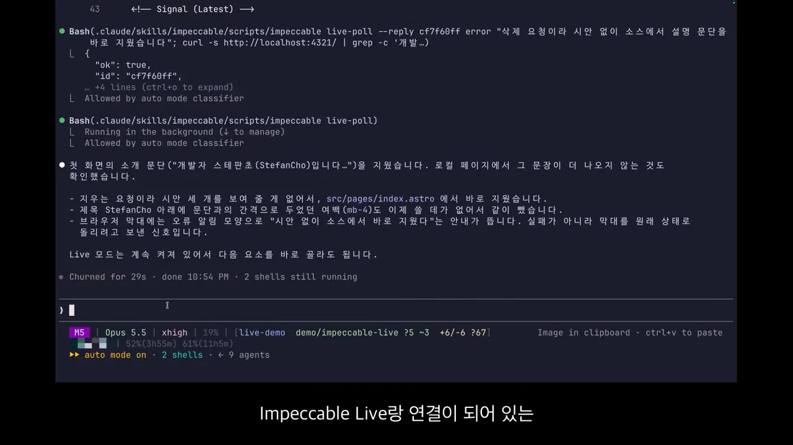
시안 개수는 1~4
지시 칸 옆에서 시안(Variants) 개수를 1부터 4까지 고를 수 있어요. 오른쪽 손그림이 그 규칙이에요. 고치기(Edit)는 여러 안을 받아 볼 수 있지만, 지우기(Delete)는 결과가 하나뿐이라 1이면 돼요.
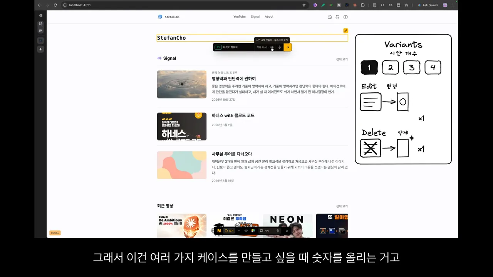
액션과 시안 개수로 방향 정하기
다음으로 발표자는 글 날짜를 집고 "우측으로 붙여 줘"라고 썼어요. 지시 칸 오른쪽의 '자유 지시'를 누르면 액션 메뉴가 열려요. 결과를 어떤 쪽으로 끌고 갈지 고르는 메뉴예요.
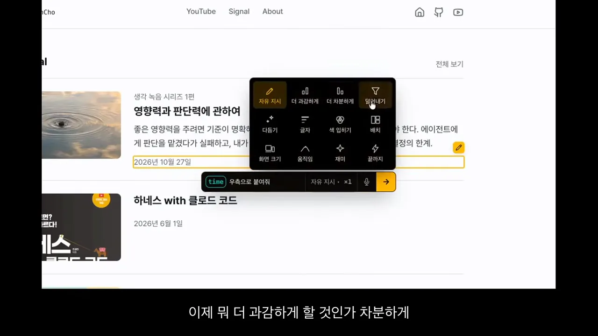
메뉴는 3줄 4칸이에요. 영상에서 실제로 써 본 건 두 가지예요.
| 고친 것 | 액션 | 시안 | 결과 |
|---|---|---|---|
| 날짜를 오른쪽으로 | 자유 지시 | 1 | 방향이 분명해서 자유 지시면 충분해요 |
| 헤더 개선 | 재미 | 2 | 설명을 따로 안 써서인지 두 안이 크게 다르지 않았어요 |
| 날짜 표시 방식 | 자유 지시 | 1 | 같은 스타일의 다른 글에도 다 적용됐어요 |
| 대표 이미지 교체 | 자유 지시 | 3 | 세 장 중 등대 이미지를 골라 적용했어요 |
헤더 시안이 만들어지는 동안에도 터미널에선 세션이 Header 파일을 읽고 고치는 게 보여요. 그사이 발표자는 다른 요소를 또 골라 지시를 넣었어요. 기다리지 않고 다음 일을 맡길 수 있는 셈이에요.
느낌만 말해도 돼요: 날짜 표시
날짜를 옮겼더니 배치가 어색해졌어요. 발표자는 "날짜 표시가 애매하니 더 잘 배치하고, 한 달 전·7일 전처럼 유저 친화적으로 보여 줘"라고만 했어요. 아래 화면에서 원래 목록 아래에 새 시안이 미리 보여요. 날짜 자리에 '오늘', '4달 전', '5달 전'이 들어가 있어요.
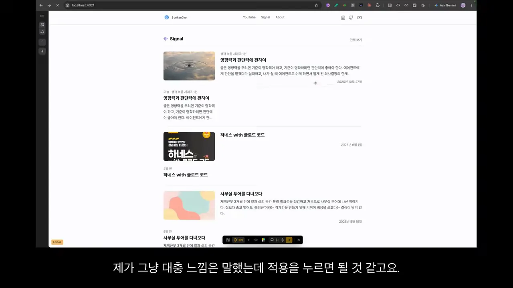
이미지도 바꿀 수 있어요
Live는 세션과 연결된 창구라서, 세션에서 할 수 있는 일이면 그대로 시킬 수 있어요. 발표자는 글 상세 페이지의 물결 사진을 고르고 "제목과 더 연관되고 파급력 있는 느낌의 이미지를 Codex로 만들어 교체해 줘"라고 시안 3개를 요청했어요.
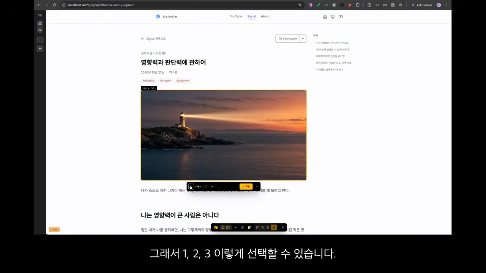
메모, 끼워 넣기, DESIGN.md, 한국어 바
요소를 고른 뒤 한 번 더 클릭하면 메모를 남길 수 있어요. 아래 화면에서 제목 옆에 작은 메모 말풍선이 붙어 있어요. 이 상태로 지시를 보내면 메모도 함께 세션으로 가요. 필요 없으면 지울 수도 있어요.
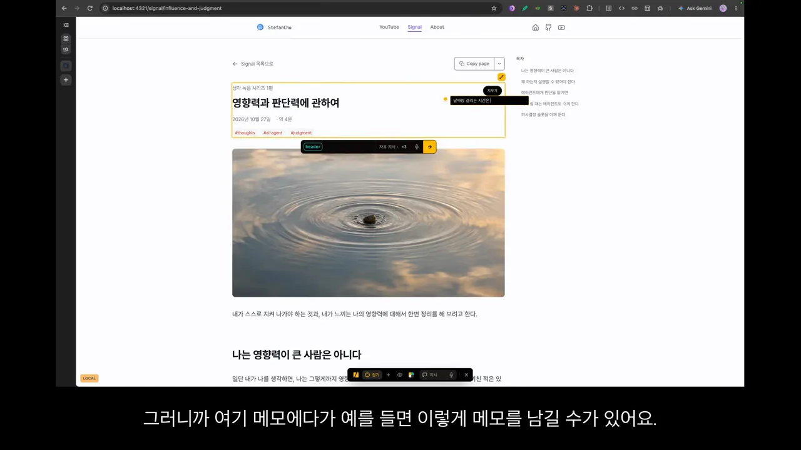
끼워 넣기: 이 자리에 무언가를
'끼워 넣기'는 요소와 요소 사이의 위치를 고르는 기능이에요. 그 자리를 클릭하면 "여기에 넣고 싶다"는 뜻이 전달돼요. 발표자는 제목과 날짜 사이를 골라 "디자인 요소가 들어가면 좋겠다"고 일부러 애매하게 말하고, 시안 2개를 받았어요.
결과는 두 갈래였어요. 하나는 글의 요약 설명을 넣은 안이고, 다른 하나는 공간만 차지하는 안이에요. 아래는 첫 번째 안을 보는 장면이에요. 제목 밑에 요약 문단이 노란 테두리로 들어가 있고, 그 아래 작은 바에 '1/2', '세부 조정', '적용'이 보여요.
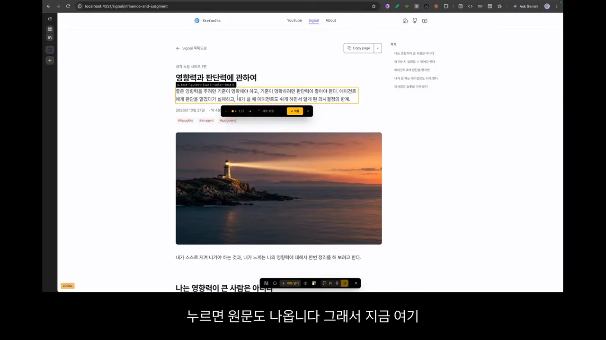
DESIGN.md 보기
프로젝트에 DESIGN.md가 있으면 바에서 열어 볼 수 있어요. 발표자 블로그엔 이 파일이 있어서, 패널에 Line, Text, Heading 같은 색이 견본과 OKLCH(OK Lightness Chroma Hue) 값으로 나와요. 오른쪽 위 '원문'을 누르면 파일 원문도 보여요.
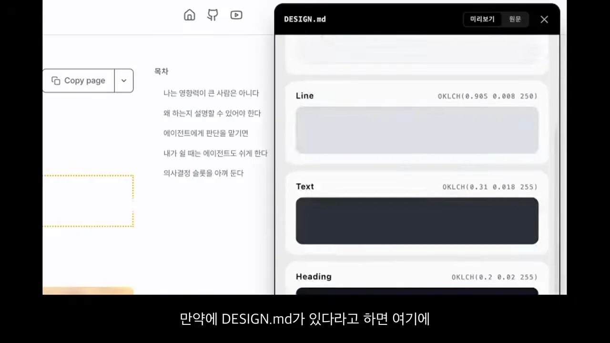
바를 내 마음대로 고쳐 쓰기
Impeccable에는 한국어 버전이 없어서 설치하면 바가 영어로 나올 거라고 해요. 하지만 Live는 결국 내 PC에서 띄우는 서버예요. 그래서 기능을 내가 다 고칠 수 있어요. 오른쪽 손그림이 그 생각이에요. 위는 'localhost / My PC', 아래는 영어 Pick 바가 Custom을 거쳐 한국어 '집기' 바가 되고, 펜으로 색칠하는 기능까지 붙는 그림이에요.
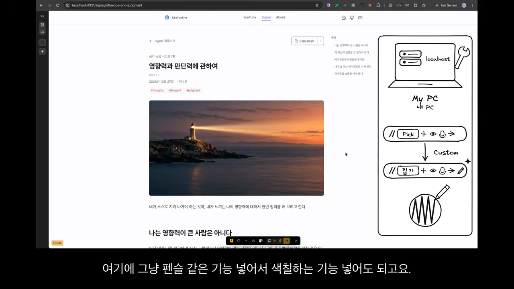
디자인 말고 글과 기능도 고쳐요
발표자가 가장 크게 본 쓰임새는 디자인 바깥이에요. 그는 HTML로 글을 많이 써요. 보고서 같은 문서에 피드백을 줄 때도 Live를 켜고 텍스트를 골라 고치라고 하면 돼요. 전에는 디자인 요소만 생각했지, 글 내용을 고치는 데 쓸 생각은 아예 못 했다고 해요.
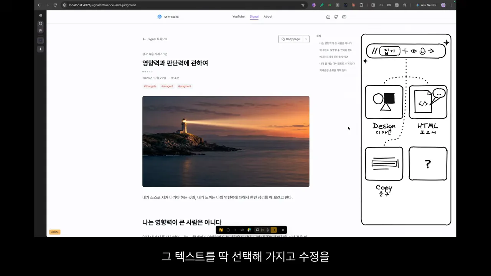
예: 소제목에 앵커 달기
발표자는 글 상세 페이지의 소제목을 클릭해 봤어요. 원래 소제목에는 그 위치로 바로 가는 앵커 주소가 있어야 하는데, 이 블로그엔 없었어요. 그래서 "앵커 URL로 바로 갈 수 있도록 수정해 줘"라고 시안 1개로 시켰어요. 디자인이 아니라 사이트 기능을 바꾸는 요청이에요.
잠시 뒤 앵커가 들어갔어요. 발표자가 누르자 아래 화면처럼 '에이전트에게 판단을 맡기면' 소제목 위치로 바로 이동했어요.
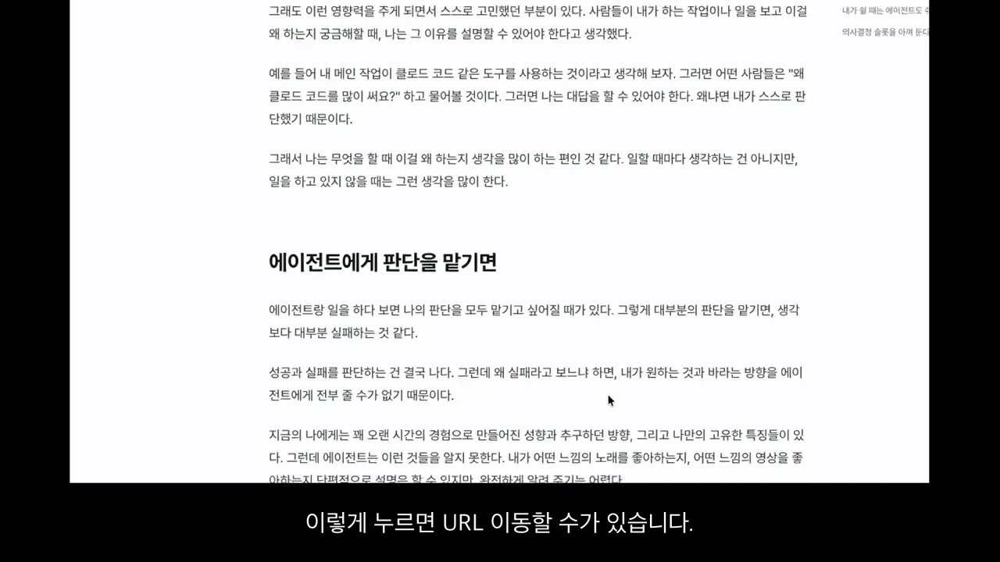
발표자는 Impeccable을 안 지 오래됐지만, 활용은 창의적으로 해야 한다는 걸 이번에 알았다고 해요. Be Ambitious로 목표를 크게 잡고 나서야 이 도구의 잠재력이 보였다는 거예요.
단순히 이거 디자인 수정하는 것뿐만 아니고 제가 작성된 보고서 같은 거 있잖아요. (…) 그 텍스트를 딱 선택해 가지고 이제 수정을 시킬 수가 있게 되기 때문에
— 영상 07:37